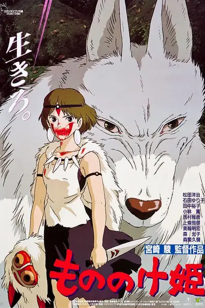

幽灵公主
6.00 分 102万次播放 · 4707收藏
日剧英语1997动漫
- 年份1997
- 地区日剧
- 语言英语
- 类型剧场版/电影
- 导演宫崎骏
- 声优松田洋治 / 石田百合子 / 田中裕子 / 小林薰 / 西村雅彦 / 上条恒彦 / 岛本须美 / 渡边哲
剧情简介
为了拯救陷入危难的村民，阿斯达卡的右手中了凶煞神的诅咒。达卡只得离开亲人，向西方流浪，寻找解除诅咒的方法。旅途中，他遇见了幻姬大人带领的穷苦村民。他们在麒麟兽的森林里开采铁矿、提炼矿石。白狼神莫娜和她养大的人类女孩“幽灵公主”桑，认为幻姬带领众人破坏森林，因此对她恨之入骨。阿斯达卡想帮助人类。本作为1997年日动漫，英语发音，由宫崎骏执导，松田洋治、石田百合子、田中裕子等参与配音。在51动漫上评分6.00，累计播放102万次、4707人收藏，适合喜欢日漫新番的观众一口气追完。